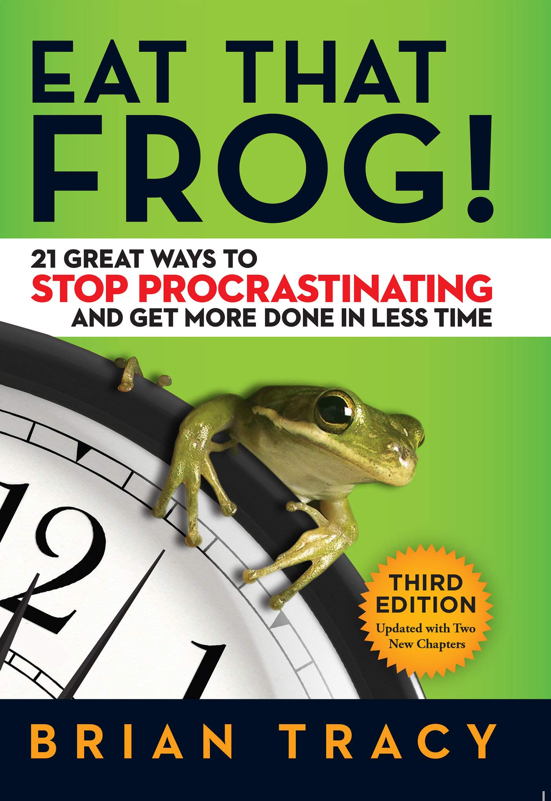

|  |
Eat That Frog! by Brain TracyLike Angela Duckworth’s self-help book, Grit, Eat That Frog! upholds the same principal: in order to succeed, you gotta — in a sense — face the music. To Tracy, ‘eating your frog’ means finishing the most difficult task of your day done first, instead of putting it off until you feel like it. This is, of course, a fancy way to say that we all have to be better at prioritizing, but the process to accomplish it is actually much more complicated than just pointing to the meatiest assignment of the day. That’s why Tracy has broken down 21 ways to avoid ‘avoiding’ your own personal and professional commitments by sharpening your time management skills. Here, readers will learn why the ickiness of hard work can actually make life easier in the end. |